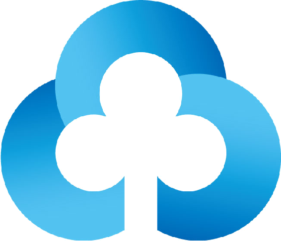
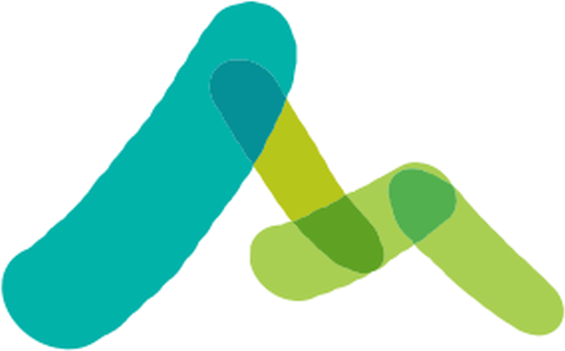

상호금융 재무건전성 탐사보도 · DSJA TeamA+
상호금융 재무건전성 탐사보도 · DSJA TeamA+
당신의 통장은
안녕하십니까
— 열리지 않는 공시와 상호금융조합 재무제표
농·축협·신협·새마을금고·수협·산림조합의 재무건전성 정보를 한데 모아 분석했다. 시민이 직접 건전성을 판단하기에는 재무제표와 금융용어가 지나치게 복잡하다.


↓
숫자는 공개돼 있다.
그런데 위험은
보이지 않는다.
한국의 모든 금융기관은 재무제표와 경영공시를 통해 연체율, 순자본비율, 대손충당금 적립률 등 재무건전성 관련 정보를 공개하고 있다. 하지만 숫자가 공개돼 있다는 것만으로 금융기관의 위험을 쉽게 판단하기는 어렵다.
특히 남양주동부새마을금고 사태의 진원지가 된 상호금융조합은 시중은행 등 1금융권과 달리 기관별로 공시 형식과 지표가 제각각이어서 비교가 더 어렵다. 제2금융권 기관들은 지역 밀착형으로 운영되지만, 정작 재무건전성을 가늠할 수 있는 정보는 여러 기관에 흩어져 있거나 접근 자체가 쉽지 않다.
본 기사는 농·축협·신협·새마을금고·수협·산림조합의 재무건전성 정보를 한데 모아 비교했다. 각 기관이 어떤 정보를 공개하고 있는지부터 실제 재무제표의 차이, 건전성을 평가하는 기준까지 데이터를 통해 살펴봤다.
01
공시했지만,
볼 수 없다
대부분의 상호금융조합은 경영공시 메뉴에서 1년에 2회, 상반기와 하반기의 재무제표를 PDF로 제공한다. 산림조합은 '회원조합 경영공시', 수협은 '조합 경영공시자료' 메뉴에서 자료를 내려받을 수 있었다. 반면 새마을금고는 홈페이지에서 직접 조회해야 해, 취재팀이 크롤링으로 수집했다.
자료를 올려놓았다는 것과 실제로 정보를 확인할 수 있다는 것은 다른 문제였다.
같은 이름의 '공시 파일'이지만 결과는 다르다.
재무상태표.pdf
열람 가능 — 자산·부채·순자본비율 확인 가능
재무상태표.pdf
열람 불가 — FasooSecureContainer로 암호화됨
지역농협은 상호금융업감독규정 제9조에 따라 반기마다 재무상태표를 포함한 경영공시를 의무적으로 공개한다. 재무상태표는 FISIS에서도 확인할 수 있지만, 경영실태평가 등급이 포함된 결산 공시는 농협 홈페이지에서만 확인할 수 있다 — 예금자가 건전성을 확인할 수 있는 사실상 유일한 창구다.
02 — 파일은 있는데, 읽을 수 없다
취재팀이 2018~2026년 전국 지역농협 경영공시 13,140건을 전수 분석한 결과, 30.23%에서 신용 재무상태표를 확인할 수 없었다. 수협도 2016~2026년 1,538개 파일 중 15건(0.98%)을 열람할 수 없었다. 파일이 없는 게 아니다. 파일은 있다. 그런데 읽을 수 없다.
71%
못 읽는 공시 중 스캔본으로 올라온 비율 — 컴퓨터가 읽을 수 없어, 사람이 일일이 입력하지 않고선 추이 분석이 불가능하다.
139건
전체 다운로드된 농협 PDF 중 Fasoo DRM으로 암호화된 파일 — 전용 클라이언트와 내부 권한 없이는 열람이 원천적으로 불가능하다.
취재팀은 DRM 상태로 재무제표를 공시한 지역농협 측에 전화로 해명을 요구했다. 익명을 요구한 지역농협 담당자 10명 모두 재무제표가 열람 불가능한 상태라는 것을 인지하지 못했으며, 당시 담당자의 실수로 문제가 발생했다고 해명했다.
EXTREME CASE · A농협의 답변
DRM 상태의 재무제표를 수정해 업로드할 계획이 있는지 묻자, 지금 수정하면 업로드일이 바뀌기 때문에 수정이 어려울 수 있다고 답했다.
기존의 공시불이행은 '파일을 올리지 않은 것'이었다. 여기서 확인된 문제는 다르다. 법적 의무인 공시 파일을 올렸다는 기록은 남지만, 예금자·조합원·언론·연구자 등 외부에서는 실질적으로 접근할 수 없다. 형식적 이행과 실질적 공개 사이의 간극이다.
내려받아도 열리지 않는
재무제표가, 8년째
'공시'되고 있다.
03 — 가혹한 숫자 나열
재무제표,
일반인에게 가혹한 숫자 나열
대부분 한자어로 조합된 전문 용어다. 한 글자씩 뜻을 짚어봐도 문맥 속에서 다시 조합하면 전혀 다른 의미가 되는 경우가 많다. '여신'이 '대출'을 뜻한다는 것을 안다고 해도, '고정이하여신'이 구체적으로 무엇을 가리키는지는 또 다른 문제다.
금융감독원이 금융용어사전을 제공하지만, 공시 자료를 열람하는 그 순간 옆에서 설명을 찾아볼 수 있는 구조는 아니다. 그래서 이 기사는 쉬운 금융용어 사전을 함께 실었다.
단어가 낯설수록,
숫자의 의미도 함께 가려진다
금융 용어 설문조사 문항별 정답률 · 100명 중 맞힌 사람 수
82명 설문 평균 점수는 100점 만점에 46.6점. 80점 이상은 8.5%, 10~30점대도 22.0%에 달했다.
설문에 참여한 대다수의 응답자(95% 이상)가 "뜻이 훨씬 직관적으로 와닿아서 쉬운 말로 바뀌면 좋겠다"며 용어 개선의 필요성에 공감했다.
{{ q.rateText }}
{{ q.label }}
04 — 감독 체계의 사각지대
제각각인 상호금융조합
감독 체계와 숨겨진 기준
금융당국은 금융기관의 경영 상태를 종합적으로 살펴 1등급부터 5등급까지 평가한다.
1등급
우수
2등급
양호
3등급
보통
4등급
취약
5등급
위험
그런데 감독당국이 조합마다 매기는 경영실태평가 등급의 산정 기준은 「상호금융업감독업무시행세칙」 제12조의4⑦에 따라 공표 대상이 아니다. 새마을금고는 감독기준에 등급 구간표를 공개하고 있지만, 나머지는 아니다. 모든 상호금융기관에 같은 기준을 그대로 적용할 수는 없다 — 조합원의 성격과 수익성 수준, 지표 산정 방식이 달라 오분류가 발생할 가능성이 커지기 때문이다.
05 — 조합 탐색
내가 거래하는 조합은
지금 어떤 상태인가
농협·신협·수협·산림조합·새마을금고의 공시 지표를 2016년부터 반기 단위로 모았다. 자본·자산건전성·수익성·유동성 네 부문과 공시된 제재 기록을 함께 볼 수 있다.
▶ 기사 원문에서 라이브 시연
06 — 결론
그래서,
당신의 통장은 안녕하십니까
최근 몇 년 새 상호금융조합의 건전성은 빠르게 악화됐다. 부실채권비율은 오르는데, 이를 대비한 대손충당금 커버리지는 오히려 낮아지고 있다. 위험은 커지는데 완충 능력은 약해지는 셈이다. 하지만 법에 따라 공시되는 재무정보조차 파일이 열리지 않거나 전문용어로 가득해, 시민이 직접 해석해야 했다. 정보가 공개돼 있다는 것과 실제로 이용할 수 있다는 것은 다른 문제다.
내 돈을 맡긴 금융 조합이 안전한지 묻는 것은 특별한 요구가 아니다. 지금 필요한 것은 더 많은 숫자가 아니라, 그 숫자를 시민이 제대로 볼 수 있게 만드는 공시다.
자료 · 금융감독원 금융통계정보시스템(FISIS). 지역농협 경영공시 원문 전수 분석(2018~2026, 13,140건).
DSJA TeamA+ · 고민성 · 양지혜 · 유현석 · 장예담 · 조찬희 기자